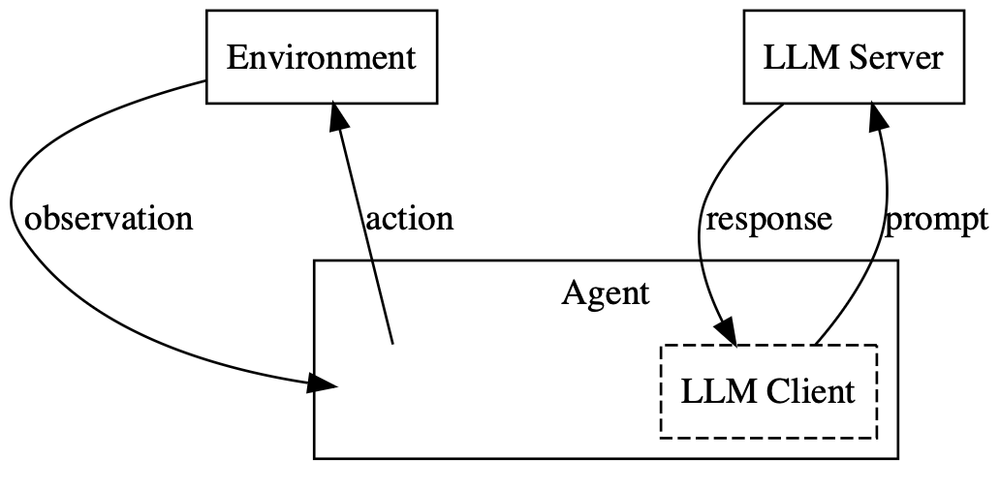

In-Context-Learning benchmark for LLM agents
Welcome to BALROG, a high-quality, easy to enter benchmark for LLM agents, testing their in-context-learning capabilities on a variety of interactive environments.
Overview

AgentQuest is a benchmark and framework that aims to improve our understanding of whether existing long-context LLMs are agentic, i.e., whether they can be used to automate complex activities that require sequential decision-making. It supports model evaluation on challenging reinforcement learning environments that test skills such as long-term planning, spatial reasoning, and the ability to deduce the mechanics of the environment.
By design, the framework explicitly decouples inference-time prompting strategies from underlying models. The goal of this design choice is two-fold: (1) to facilitate rapid prototyping of inference-time methods for improving model performance on long-context decision-making beyond zero-shot prompting and (2) to ensure that model evaluations are consistent and rigorous.
In the remainder of this section, we introduce the game environments evaluated in the benchmark and we discuss our protocols for model submission to the Benchmark Leaderboard.
Environments
BabyAI. A simple, two-dimensional grid-world in which the agent has to solve tasks of varying complexity described in natural language (e.g., “go to the blue ball, then pick up the grey key”). Agents are tested across five different types of navigation tasks.
Crafter. A Minecraft-inspired grid environment where the player has to explore, gather resources and craft items to ensure their survival. Agents are evaluated based on the number of achieved milestones, such as discovering new resources and crafting tools.
TextWorld. An entirely text-based game with no visual component, where the agent has to explore mazes and interact with everyday objects through natural language (e.g., “cook potato with oven”). Unlike the other environments in AgentBench, TextWorld is not a grid-world. Models are evaluated on three different tasks.
Baba Is AI. An environment based on the popular puzzle video game Baba Is You. The player manipulates the rules of the game world by pushing word blocks, altering how objects interact. Agents are tested on 40 puzzles.
MiniHack. MiniHack is a multi-task framework built on top of the NetHack Learning Environment. We select four different tasks, Corridor, CorridorBattle, Boxoban, and Quest. Collectively, they assess a wide range of skills, including exploration, navigation, long-term planning, and resource management.
NetHack Learning Environment (NLE) is based on the classic roguelike game NetHack, known for its extreme difficulty and complexity. Success in NetHack demands both long-term strategic planning, since a winning game can involve hundreds of thousands of steps, as well as short-term tactics to fight hordes of monsters. Accurate credit assignment is also crucial to understanding which actions contributed to success or failure. It takes human players years to master NetHack without accessing external guides.
Skills |
BabyAI |
TextWorld |
Crafter |
Baba Is AI |
MiniHack |
NLE |
|---|---|---|---|---|---|---|
Navigation |
✅ |
✅ |
✅ |
✅ |
✅ |
✅ |
Exploration |
✅ |
✅ |
✅ |
✅ |
✅ |
✅ |
Resource Management |
❌ |
✅ |
✅ |
❌ |
✅ |
✅ |
Complex Credit Assignment |
❌ |
❌ |
✅ |
✅ |
✅ |
✅ |
Deducing Env. Dynamics |
❌ |
❌ |
❌ |
✅ |
✅ |
✅ |
Long-term Planning |
❌ |
❌ |
❌ |
✅ |
✅ |
✅ |
Turns to Complete |
10¹ |
10² |
10² |
10² |
10³ |
10⁴–10⁵ |
Time to Master for Humans |
Seconds |
Minutes |
Hours |
Hours |
Hours |
Years |
Structure:
ICL-bench
├── README.md # Documentation of the repository
├── config/ # Config folder
│ ├── eval.yaml # Base evaluation config file
├── iclbench/ # Main code of the
│ ├── agents/ # Agent implementations with LangChain (naive agent for now)
│ ├── environments/ # Environments folder with a unified env loader
│ └── prompt_builder/ # History, Zero-shot, and VLM prompt builders
│ ├── evaluator.py # File with main evaluator class
├── external/ # External submodules
│ ├── nle-language-wrap # Modified language wrapper (to be moved inside nle in environments)
└── eval.py # Entry point of the benchmark